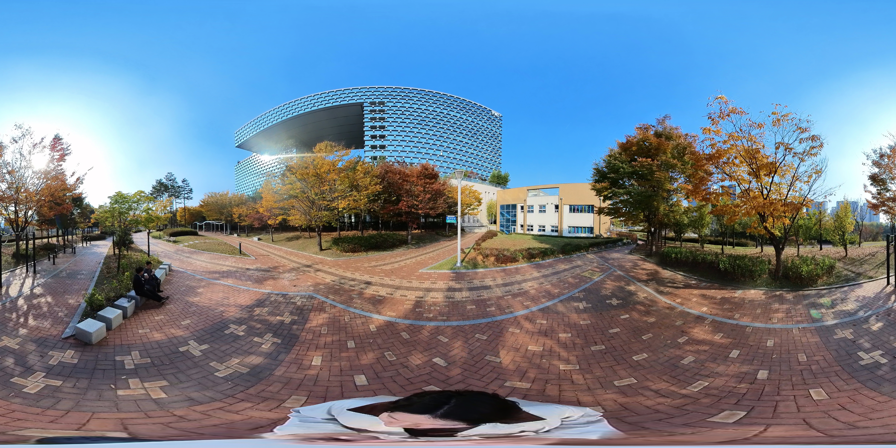
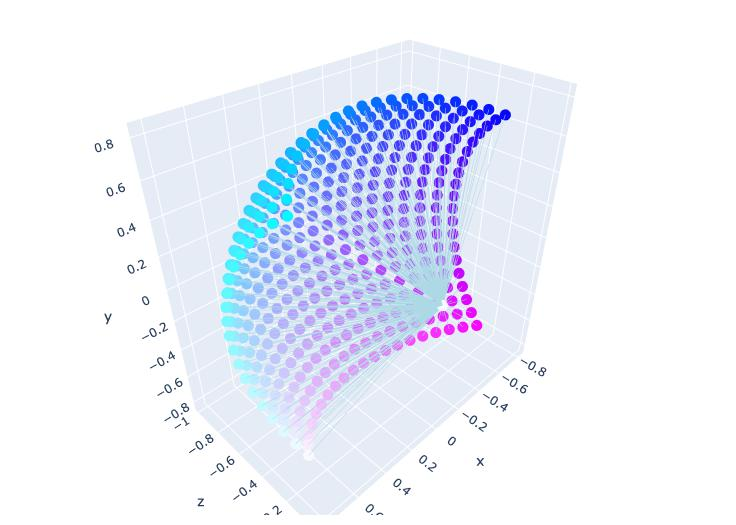
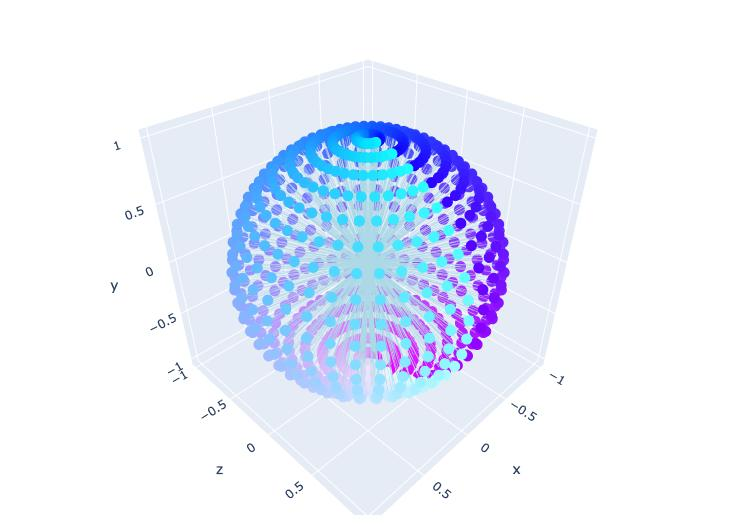
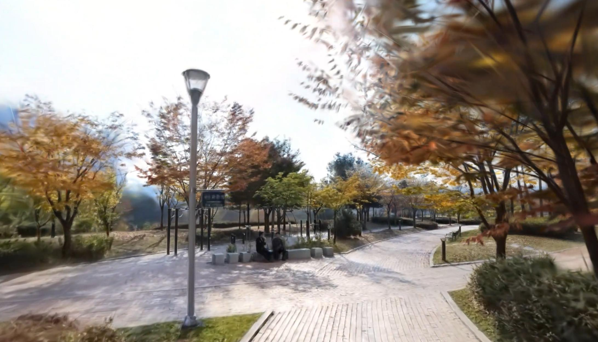
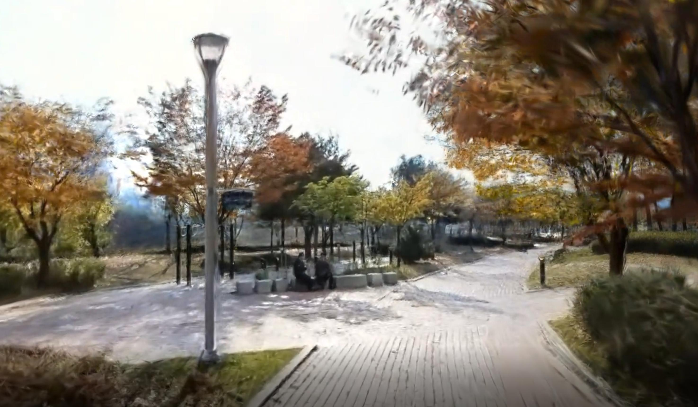
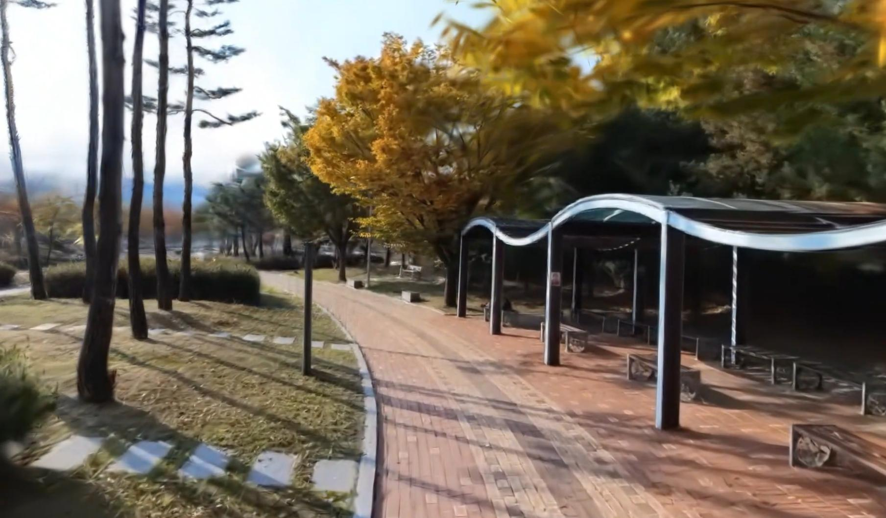
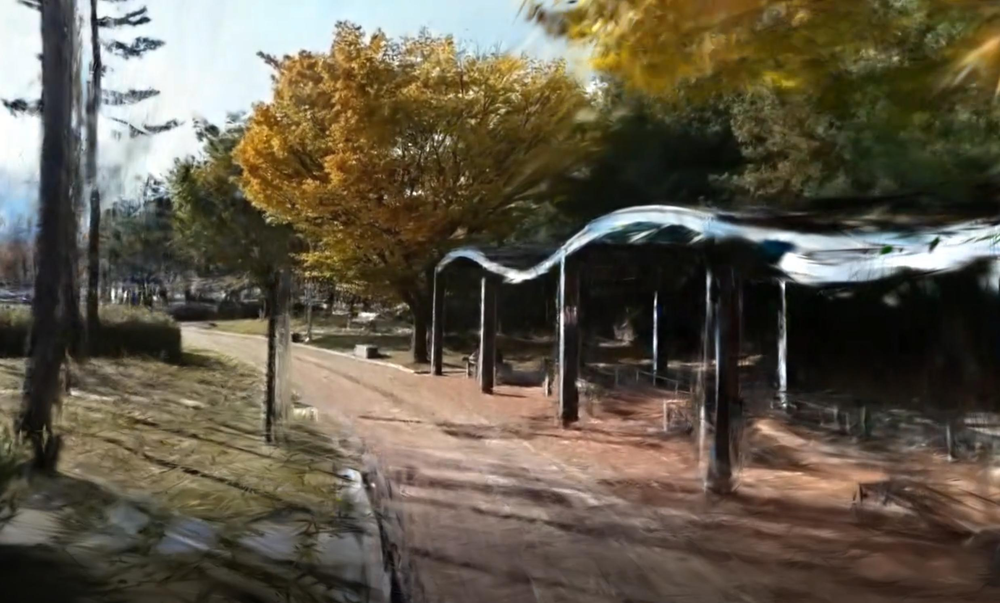
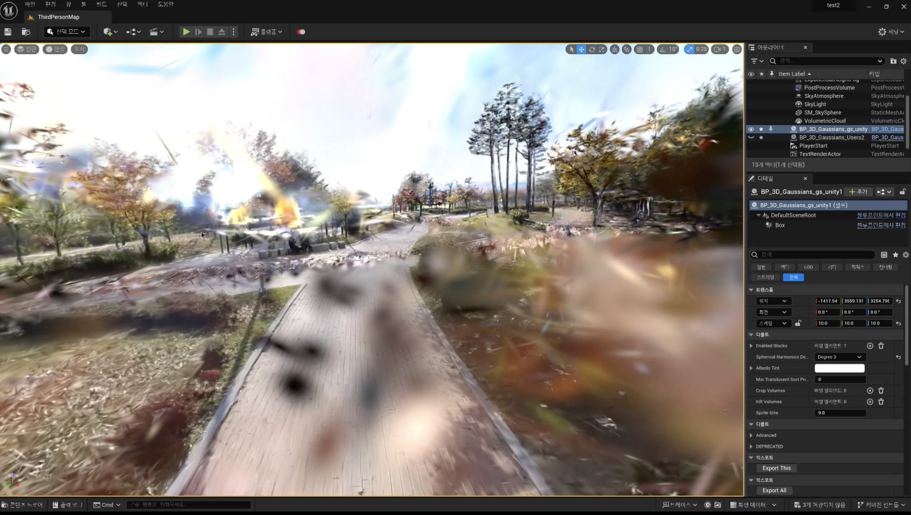
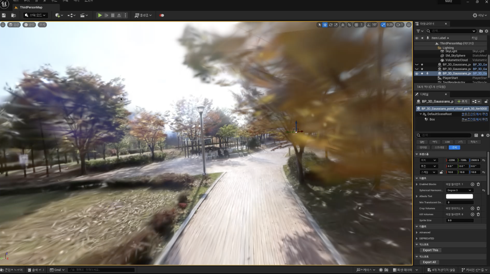

Neural Rendering with 360 Video
Capturing Large Scenes with a 360 Camera
To capture large scenes efficiently, I used 360-degree video as the ground-truth source for novel-view synthesis. A consumer 360 camera has two fisheye lenses positioned back to back, capturing a full spherical view with fewer camera positions than a conventional narrow-FOV setup.

Fisheye-Aware Gaussian Splatting
The first reconstruction pipeline trained 3D Gaussian Splatting on stitched equirectangular images. The results were suboptimal because the stitching process introduced seams and geometric distortions, which then became incorrect supervision for the 3D scene.
I switched the training source to the original fisheye images. This avoided panorama stitching, but the standard Gaussian rasterizer assumed a pinhole camera and could not project splats into fisheye views. I therefore developed a custom CUDA Gaussian rasterization module for the fisheye camera model, extending the reconstruction pipeline to work directly with the original rays.
| Fisheye camera model | Spherical camera model |
|---|---|
 |
 |
| Gaussian Splatting reconstruction | |
 |
 |
 |
 |
The resulting scene was reconstructed directly from the dual-fisheye capture:
Gaussian Splatting in Game Engines
With the reconstructed scene, I moved the representation into Unity and Unreal Engine, where it could be combined with normal engine controls and interactive content.
For Unity, I implemented the Gaussian rasterization path and reduced representation cost with vector quantization. The following virtual-world demo combines the reconstructed scene with a neural avatar, also produced with a Radiance Field technique.
Contribution-Based Pruning for Unreal Engine
The Unreal Engine path exposed a different limitation. The tested Niagara setup could render roughly two million particles effectively, while a complete reconstructed scene often contained more than six million Gaussians. Without optimization, the scene could not fit the engine's practical particle budget.
I defined each Gaussian's contribution as its accumulated alpha-composited influence over all training images:
$$ C = \sum_{k=1}^{n} C_k, \qquad C_k = \sum_{p \in \mathcal{P}_k} \alpha_i(p) \prod_{j=1}^{i(p)-1}(1-\alpha_j). $$
This score measures how much a splat actually contributes to rendered pixels rather than pruning only by opacity or geometric size. I removed the least-contributing Gaussians, briefly refined the retained scene, and repeated the prune-and-refine process for a small number of steps.
| Original scene in Unreal Engine | Pruned and refined scene |
|---|---|
 |
 |
Result
The final demonstration runs the pruned Gaussian Splatting scene interactively inside Unreal Engine. The project established the practical boundaries of the complete pipeline: camera-model errors at capture time, representation cost at engine import, and the pruning signal required to preserve quality under a hard runtime budget.
For broader context, see Can NeRF be Used in Game?.